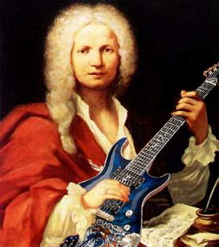
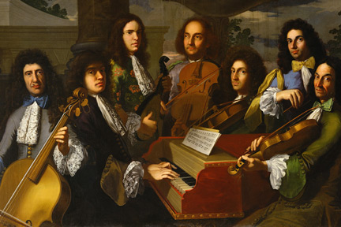

Harpsichord Hero
La Follia - Vivaldi
Winter Mvt. 2 Largo - Vivaldi
Start
 
Get ready to rock out like it's 1685!
Controls:
left click:
play chord tones,
mouse+space:
move cursor,
number key row:
play chords
letter keys - top 2 rows:
play motifs and ornaments,
letter keys - bottom row:
select rhythm
Shift:
invert motif,
Tab/Enter:
next motif descend